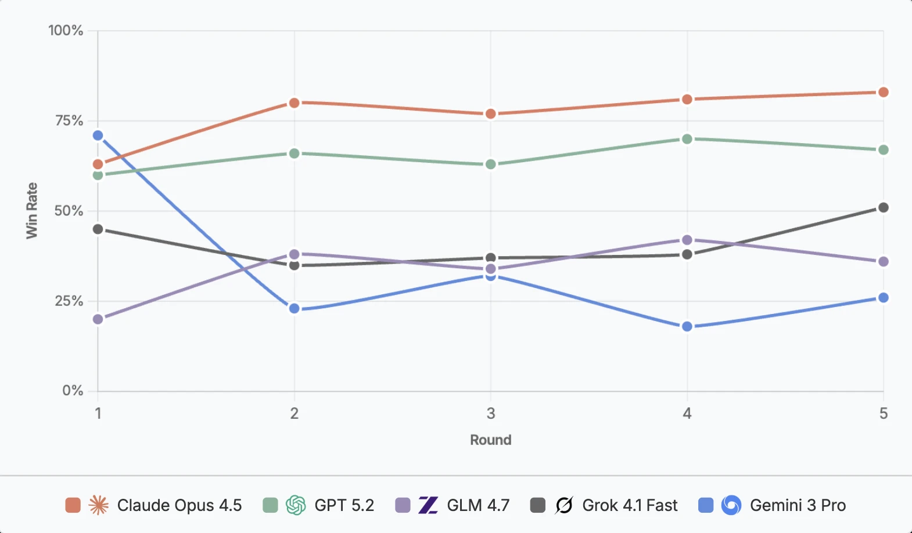
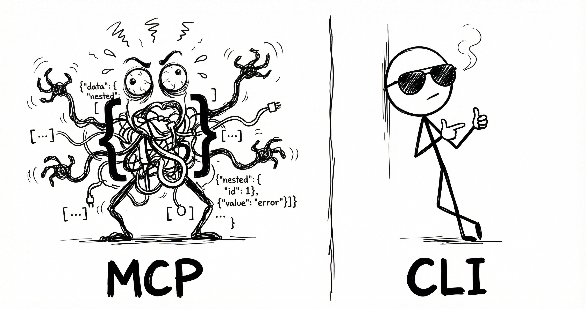

THE FRONT PAGE
EDITOR'S NOTE: The exodus of talent speaks louder than press releases—yet the tools they leave behind still hum with the ghost of what engineering could have been. #the unraveling of institutional trust in AI labs
Solar generated more electricity than hydropower in the US for the first time last year, a milestone obscured by transmission bottlenecks and the fact that 60% of new capacity sits behind meters, not on the grid. The shift arrives as curtailment rates climb in sun-rich states, exposing the gap between deployment speed and grid readiness.

This release shifts agent benchmarks from static reasoning to the kinetic pressure of real-time strategy, exposing a critical trade-off between model depth and the execution speed required to prevent tactical collapse. It remains to be seen if the current generation of transformers can sustain coherent play without the prohibitive compute costs of high-frequency inference.

The release of OpenFang shifts agent architecture from fragile Python scripts toward a systems-level OS, introducing necessary memory safety at the cost of significantly higher development friction for the average prompt engineer.
The latest release of the preeminent language-oriented programming environment prioritizes runtime stability and compiler efficiency over trendy abstractions. While the ecosystem remains a sanctuary for rigorous software craft, the barrier to entry remains high, risking further isolation from the broader, more impatient developer demographic.
A new CLI tool chains Anthropic’s Claude to Linear and GitHub, letting teams offload issue triage, PR reviews, and doc updates to swarms of specialized agents. The efficiency gains are real, but the tool’s opacity risks turning repositories into black boxes where no single human understands the workflow.
Claude Code moves beyond simple completion to execute commands and manage state directly within the shell. While it streamlines the tedious plumbing of refactoring, it shifts the engineer's role from a precision pilot to a supervisor of a black-box operator that may hallucinate system-level side effects.

A new CLI tool undercuts managed control plane pricing by 40%, trading ergonomics for raw efficiency. The catch? Your ops team now needs to memorize 17 new flags—*and* pray the audit logs don’t vanish in a `--force` mishap.
An open-source LLM inference engine, ZSE, claims sub-4-second cold starts, sidestepping the usual tradeoff between latency and resource overhead. The project’s minimalist design raises questions about long-term maintainability in production environments where edge cases tend to surface late.
Mainline Linux support for RK3588 and RK3576 hardware video decoding finally arrives, moving silicon out of the purgatory of vendor-specific forks. It restores a measure of portability to these chips, though the reliance on opaque firmware blobs remains a persistent compromise for the purist.
MODEL RELEASE HISTORY
No confirmed model releases were detected for this edition date.